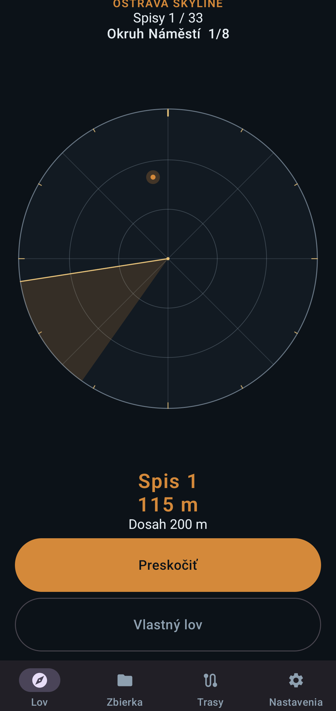
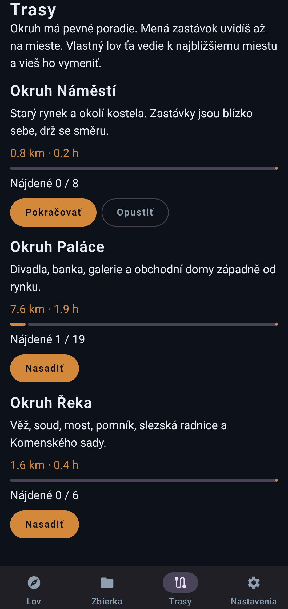
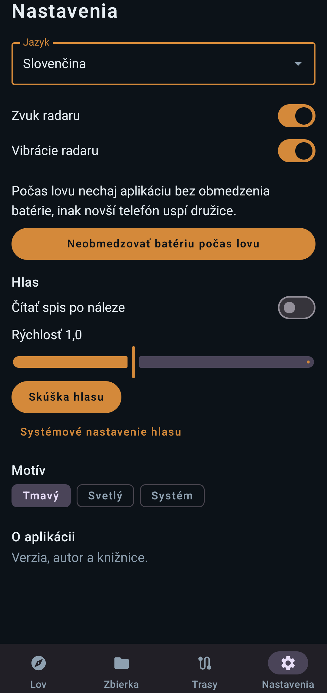

Games
A walking game through Ostrava, full of riddles. Solve them, find the house, and the chronicle tells you its story and the lives of the people who lived there.



Every house in the centre of Ostrava remembers something. It will not tell you for free.
OstravaSkyline is a walking game full of riddles. Each one leads you to a house, a statue, or a place in the city. You have to look around, read the facades, and think. When you find the right place, a chronicle entry opens as a reward. It tells how the place came to be, who built it, and what happened to the people who lived there.
Waiting for you: a pharmacy that was the only one in town for over a hundred years. A café where famous people used to sit. A house taken from its owners twice. And many other stories you may never have heard.
Play alone, with friends, or with children. All at once, or a little at a time.